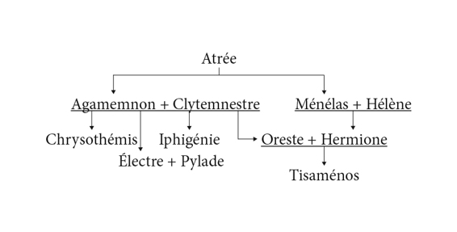

Những Érinyes mặc dù đã được nữ thần Athéna ban cho một chức danh mới là nữ thần Ân đức mà nhiệm vụ và chăm nom đến hạnh phúc của nhân dân xứ sở Attique và đô thành Athènes, nhưng họ vẫn chưa thật hài lòng. Trong số họ vẫn có người truy đuổi Oreste, giày vô chàng, bắt chàng phải sống trong nỗi đau khổ ăn không ngon, ngủ không yên. Oreste chẳng còn phương kế nào khác ngoài phương kế cầu viện đến sự chỉ dẫn, giúp đỡ của vị thần Ánh sáng và Chân lý Apollon. Chàng đến đền thờ Delphes để cầu khấn thần. Thần phán bảo:
- Con hãy vượt biển sang xứ sở Tauride xa xôi ở phương Đông, đoạt bằng được bức tượng nữ thần Artémis về. Công việc này chẳng dễ dàng. Nhiều nỗi nguy hiểm chờ đón con, nhưng con cứ yên tâm. Ta lúc nào cũng ở bên con và giúp con vượt qua những phút hiểm nghèo.
Oreste lên đường vượt biển. Cùng đi với chàng có người bạn thân thiết và chung thủy Pylade. Trải qua nhiều ngày đêm lênh đênh trên biển cả, con thuyền của hai chàng thanh niên Hy Lạp đã tới xứ sở Tauride. Họ giấu thuyền vào một hẻm đá kín đáo và lần mò tìm đường đi tới đến thờ nữ thần Artémis. Sau khi dò xét tình hình, hai chàng thanh niên Hy Lạp thấy rằng chỉ có lợi dụng đêm tối, đột nhập vào đền thờ, đoạt bức tượng mang đi, và một đêm kia sau nhiều lần dò xét, tính toán trù liệu, họ thực thi ý đồ của mình. Không may cho hai chàng thanh niên Hy Lạp, vào lúc họ vừa mang được bức tượng nữ thần ra khỏi đền thờ thì bị lộ. Những người dân Tauride phát hiện thấy họ, liền hô hoán ầm ĩ, kéo nhau truy đuổi kẻ cắp. Oreste và Pylade không chạy thoát được về nơi giấu thuyền. Họ bị bao vây và sau một hồi lâu kháng cự rất quyết liệt, họ bị bắt sống cùng tang vật. Những người dân Tauride trói chặt họ lại và giải về cung điện tâu trình nhà vua. Nhà vua nhìn thấy hai tên lạ mặt cả gan làm một việc càn rỡ xúc phạm đến tôn miếu thiêng liêng của xứ mình, lòng muôn phần giận dữ. Ông thét lớn:
- Đem ngay hai tên súc sinh này làm lễ hiến tế tạ tội nữ thần Artémis!
Nhưng trời lúc đó còn chưa sáng. Lễ hiến tế chỉ có thể cử hành được vào ngày mai. Đến đây ta phải dừng lại nói qua một chút về phong tục của người dân Tauride. Là một cư dân ở xa tít tắp tận phía đông bắc, những người dân xứ này hầu như rất ít giao tiếp với những người ở các xứ xa lạ khác. Ở họ không có phong tục quý người trọng khách như người Hy Lạp. Họ nhìn những người ở các xứ sở khác với một con mắt xa lạ, thù địch. Vì thế bất cứ người dân của một đất nước nào đặt chân đến xứ sở của họ thì lập tức bị bắt ngay để làm lễ hiến tế cho nữ thần Artémis. Hai chàng thanh niên Hy Lạp sắp bị giết để hiến tế không có gì là ngoại lệ cả, hơn nữa họ lại phạm trọng tội, nghĩa là đáng bị giết đến hai lần!
Sáng hôm sau khi trời vừa sáng tỏ, nhân dân Tauride rủ nhau kéo đến quần tụ trước đền thờ Artémis để dự lễ hiến tế. Người chủ trì và hành lễ là viên nữ tư tế của nữ thần, nàng Iphigénie xinh đẹp, con gái của Agamemnon và Clytemnestre. Xưa kia để cho đoàn thuyền Hy Lạp được thuận buồm xuôi gió vượt biển sang thành Troie, nàng đã tự nguyện hy sinh thân mình để làm lễ hiến tế cầu xin nữ thần Artémis nguôi giận phù hộ cho quân Hy Lạp, nhưng vào lúc mũi dao nhọn của lão vương Calchas, viên tư tế và nhà tiên đoán tài giỏi của quân Hy Lạp, vừa kề vào cổ nàng thì nữ thần Artémis bằng phép lạ thần thông biến hóa của mình đã cứu nàng, thay vào bằng một con cừu231. Nữ thần Artémis đưa Iphigénie người trinh nữ tới xứ sở xa lạ này để nàng trông nom việc thờ phụng nữ thần, và bây giờ người trinh nữ Hy Lạp ấy, viên nữ tư tế ấy, sắp cầm dao nhọn chọc vào cổ hai chàng trai Hy Lạp mà không biết rằng mình sắp giết chết đứa em trai ruột thịt thân thiết của mình. Đêm vừa qua, Iphigénie trải qua một giấc mộng đầy kinh hoàng: Cung điện của cha nàng ở Argos bị một cơn động đất làm sụp đổ, chỉ còn sót lại một cây cột và từ cây cột này rủ xuống những búp tóc vàng. Còn nàng thì phải rửa sạch, lau chùi, đánh bóng cây cột ấy như làm công việc tư tế của nàng: Đưa cây cột đó ra làm lễ hiến tế. Thật kinh dị và khó hiểu. Chẳng ai kịp tường giải giấc mộng kỳ lạ ấy cho nàng. Hơn nữa, bản thân nàng cũng không thể suy ngẫm được điềm báo của giấc mộng ấy vì sau bao năm xa quê hương và gia đình, nàng chắc rằng Oreste, em trai của nàng chẳng còn sống. Vì thế giờ đây khi sắp làm lễ hiến tế, nàng định bụng sẽ giết những người lạ mặt phạm tội để dâng cúng cho vong hồn em trai nàng. Giờ hành lễ đến. Hai chàng trai bị giải đến trước bàn thờ. Iphigénie hỏi lai lịch của họ. Được biết họ là người Hy Lạp, Iphigénie bèn hỏi thăm họ về quê hương Argos của nàng, về cha mẹ nàng, về người em trai của nàng là Oreste. Hai chàng trai Hy Lạp giấu kín tông tích. Họ chỉ cho viên nữ tư tế của nữ thần Artémis biết một tin mừng: Oreste còn sống. “Oreste còn sống! Trời ơi! Em ta còn sống ư!” Iphigénie thầm kêu lên như thế và nảy ra một ý định: Chỉ giết một người để làm lễ hiến tế, còn tha cho một người, để nhờ người đó mang một bức thư về Hy Lạp báo tin cho Oreste biết người chị ruột của chàng là Iphigénie hiện vẫn còn sống, hiện ở Tauride, là tư tế của nữ thần Artémis. Iphigénie bày tỏ ý định này với hai chàng trai Hy Lạp, và thế là hai chị em nhận được ra nhau, gặp lại nhau sao bao năm trời ly tán. Thật là vui mừng khôn xiết! Nhưng họ chẳng có nhiều thời gian để hàn huyên, tâm sự. Lễ hiến tế đến lúc phải cử hành rồi. Làm thế nào bây giờ? Làm thế nào để trốn thoát khỏi mảnh đất Tauride này? Trước nhà vua và đông đảo dân chúng, Iphigénie cất tiếng:
- Hỡi vị vua đầy quyền thế của xứ sở Tauride! Hỡi dân chúng! Lễ hiến tế sắp sửa bắt đầu, nhưng vừa rồi ta hỏi chuyện hai kẻ lạ mặt càn rỡ này ta được biết chúng đã phạm tội giết người ở quê hương chúng, vì thế chúng mới bỏ trốn tới đây. Như vậy bàn tay ô uế của chúng đã xúc phạm đến nữ thần Artémis linh thiêng của chúng ta. Chúng ta phải làm lễ tẩy uế cho bức tượng, và cả hai tên phạm tội nữa. Những kẻ sát nhân như thế nếu chưa được làm lễ rửa tội mà đem hiến tế thần linh thì không được. Chúng ta sẽ phạm một trọng tội nếu hiến tế cho các vị thần những lễ vật không tinh khiết. Các vị thần sẽ nổi giận, giáng tai họa xuống trừng phạt đất nước chúng ta. Vì thế ta quyết định đưa tượng nữ thần Artémis và hai kẻ phạm tội này ra ngoài bờ biển để làm lễ rửa tội. Nhà vua và chúng dân thấy có điều gì không vừa ý xin cứ truyền dạy.
Nhà vua và dân chúng nghe xong đều lấy làm phải. Vua bèn truyền cho rước tượng nữ thần Artémis ra bờ biển. Những tăng lữ của đền thờ rước tượng đi trước, còn quân lính giải hai tên phạm tội theo sau. Iphigénie dẫn đầu đám rước. Nàng dẫn đám rước ra quãng bờ biển nơi Oreste và Pylade cất giấu con thuyền. Tới nơi, Iphigénie ra lệnh cho đám lính phải lui về phía sau, thật xa, vì nghi lễ tẩy uế, rửa tội đòi hỏi phải tiến hành bí mật. Chỉ có người chịu lễ và các tăng lữ hành lễ được biết. Người ngoài cuộc không được tham dự, không được biết. Đó là tập tục từ nghìn xưa truyền lại. Chẳng cần phải kể dài dòng ta cũng đoán biết được lễ rửa tội tiến hành như thế nào. Iphigénie nhanh chóng cởi trói cho Oreste và Pylade, và hai chàng thanh niên Hy Lạp cũng nhanh chóng chuẩn bị buồm, chèo con thuyền. Đám lính chờ ở phía sau thấy lâu sinh nghi. Chúng phá bỏ lệnh cấm chạy ra ngoài bờ biển xem sự thể ra sao. Thật lạ lùng! Người trinh nữ tư tế của họ đang ở trên một con thuyền. Còn hai tên tội phạm đang ra sức đẩy con thuyền ra khỏi vùng nước cạn. Thế là lũ lính hô hoán ầm lên và xông tới. Chúng cho rằng viên nữ tư tế của họ đã bị bắt cóc, cần phải giải thoát cho nàng. Xung đột nổ ra. Oreste và Pylade chống đỡ. Tài nghệ cao cường của chàng cùng với Pylade đã chặn đứng bọn lính lại, và hơn thế nữa đánh cho chúng thất điên bát đảo phải quàng chân lên cổ mà chạy thoát thân. Mọi người xuống thuyền và ráng sức chèo để thoát khỏi vùng nguy hiểm. Con thuyền dần dần xa bờ. Xứ sở Tauride sau lưng họ chỉ còn là một vật xanh thẳm, nhưng số phận đâu có dành cho con thuyền của Oreste trở về quê hương Hy Lạp dễ dàng như thế. Một cơn bão nổi lên. Con thuyền vật vã trong sóng gió và sóng gió ném nó trở lại nơi xuất phát. Con thuyền trôi giạt vào bờ biển xứ Tauride. Tình hình thật muôn phần nguy ngập. Những người dân Tauride mà bắt được thì những người Hy Lạp cầm chắc cái chết.
Chính vào lúc nguy ngập như vậy, nữ thần Athéna đã kịp thời xuất hiện và ra tay phù trợ. Nữ thần đến cung điện của nhà vua vào lúc nhà vua đang đốc thúc tùy tướng truy đuổi. Lính tráng đã vào cơ vào ngũ. Thuyền bè, lương thực đã chuẩn bị xong xuôi. Nữ thần Athéna bèn lên tiếng phán truyền cho nhà vua xứ Tauride phải đình chỉ ngay việc đuổi bắt. Hãy để cho Iphigénie và hai chàng trai Hy Lạp cùng những người đi theo trở về quê hương Hy Lạp yên bình. Hơn thế nữa, nhà vua phải cho tất cả những tăng nữ phục vụ việc thờ cúng Artémis ở ngôi đền cùng về Hy Lạp với Iphigénie. Thấy nữ thần Athéna xuất hiện và phán truyền như vậy, nhà vua chỉ còn biết cúi đầu tuân lệnh.
Oreste trở về quê hương với niềm sung sướng khôn cùng. Chẳng những chàng đã mang được bức tượng nữ thần Artémis về Hy Lạp mà còn đưa người chị thân thiết của mình sau bao năm xa cách, những tưởng đã thiệt phận, cùng về với bức tượng. Chàng dâng bức tượng nữ thần Artémis cho đất Attique thiêng liêng. Nhân dân Attique dựng luôn một ngôi đền tráng lệ bên bờ biển và rước tượng Artémis về thờ. Tiếp đó chàng trở về quê hương Argos để đoạt lại ngai vàng. Ngai vàng lúc này do Alétès con của Égisthe chiếm giữ. Một cuộc giao đấu xảy ra. Alétès không chống đỡ nổi, bị giết chết. Thế là Oreste lên ngôi vua với tất cả niềm tự hào chính đáng: xóa bỏ được tội lỗi của bản thân, lập được chiến công, dựng lại được cơ nghiệp của vua cha, thanh toán hẳn, chấm dứt được mối thù lưu truyền từ đời ông cha giữa hai dòng họ Agamemnon và Thyeste.
Oreste trở về quê hương. Chàng lấy Hermione, con gái của Ménélas và Hélène, làm vợ. Chuyện Oreste lấy Hermione cũng khá lôi thôi: Xưa kia khi cuộc Chiến tranh Troie chưa xảy ra, Ménélas đã từng hứa gả Hermione cho Oreste, nhưng rồi sau chiến tranh xảy ra và kéo dài tới chục năm trời. Để giành được chiến thắng, theo một lời sấm ngôn cơ mật mà quân Hy Lạp biết được, quân Hy Lạp phải mời được dũng sĩ Néoptolème con của người anh hùng Achille, tới thành Troie tham chiến. Dưới quyền chỉ huy của chủ tướng Agamemnon, quân Hy Lạp đã thực hiện được việc này, và chính Ménélas là người góp phần quan trọng vào việc thực hiện sự việc tối ư quan trọng đó. Ông gả “béng” luôn Hermione cho Néoptolème để Néoptolème phấn khởi nhận nhiệm vụ sang giao chiến với quân Troie. Còn bây giờ cuộc Chiến tranh Troie đã kết thúc. Nàng Hélène đã trở về với Ménélas. Vậy thì nàng Hermione tất phải trở về với Oreste, và cuộc “chiến tranh” giữa Oreste với Néoptolème ắt phải xảy ra. Oreste với khí thế của người giành được những thắng lợi liên tiếp lại được thần thánh phù hộ, đến nhà Néoptolème gõ cửa, đòi lại nàng Hermione. Xô xát, tất nhiên là xô xát vì Néoptolème tính nóng như lửa, kết thúc bằng thắng lợi của Oreste. Néoptolème chết, Hermione về sống với Oreste ở Argos. Đôi vợ chồng này sinh được một con trai tên là Tisaménos.
Còn Pylade, Oreste chắp nối xe duyên với người chị ruột của mình là Électre.
Gia hệ người anh hùng Oreste

231 Có lẽ tác giả nhầm; chính xác là con hươu như trên đã kể (Chương Truyền thuyết về cuộc Chiến tranh Troie: Quân Hy Lạp lại tập trung ở Aulis). Chưa thấy tài liệu nào khác kể là con cừu (Chú thích của Nguyễn Tuấn Linh).